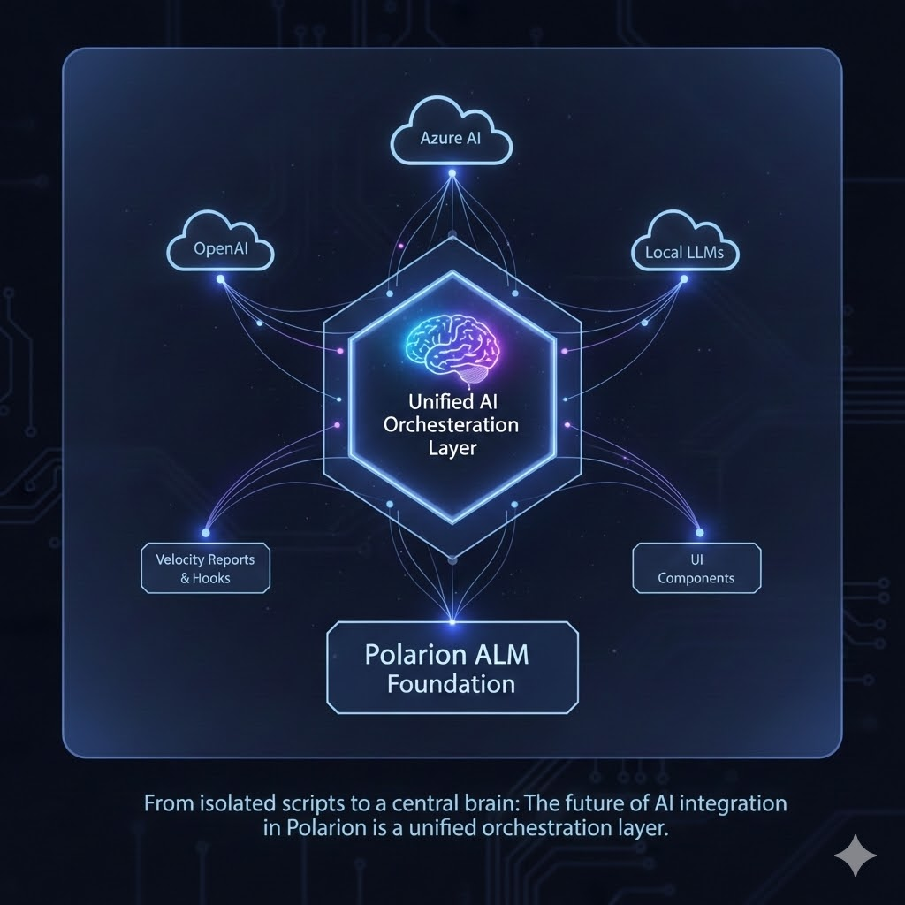
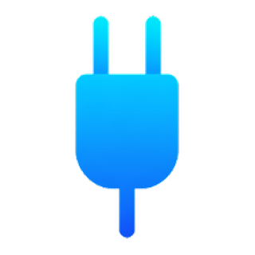
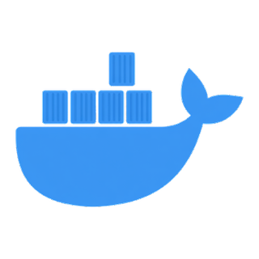
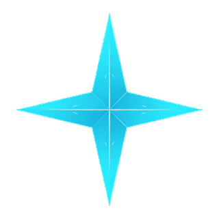

More AI,
less manual work.
I'm Phillip Bösger — Polarion ALM expert, AI & full-stack developer. I don't just consult. I build, and I build fast.

Real Polarion delivery experience, now channelled into AI.
I combine hands-on Polarion ALM experience with modern AI development to remove the repetitive, manual work that slows engineering teams down — from requirements to rollout.
Consulting that ships, not just advises
Three ways I help engineering teams do less manual work and get more out of Polarion and AI.
Polarion Consulting
Full lifecycle expertise — from strategy and requirements engineering to configuration and rollout.
- Requirements & workflow design
- Configuration & customization
- Migration & rollout
AI Enablement
Coaching for developers and teams on GitHub Copilot, VS Code, MCP and AI-powered testing, grounded in real delivery.
- Copilot & MCP onboarding
- AI-powered testing
- Team coaching programs
Full-Stack Builds
Fast, adaptable, fully documented AI features for Polarion — replacing manual clicks with automated pipelines.
- Custom Polarion extensions
- Pipeline & CI/CD automation
- GenAI integrations
Things I build
A growing collection of AI agents, automations and Polarion extensions — each a step toward less manual work and more AI in Polarion.

Open SourcePolarion MCP Server
Copilot meets your backlog
Open-source MCP server exposing 271 Polarion REST operations as AI-native tools — for Claude, VS Code Copilot, GitHub Copilot and more.
Learn more →Polarion Code Editor
VS Code-style editing in Polarion
A Monaco-powered file editor built into Polarion Administration — edit Velocity macros, JSON and XML without an SVN client.
Learn more →
Open SourcePolarion Docker
Run Polarion ALM in containers
Fully automated Dockerfile & scripts that containerize a fresh Polarion install — zero manual setup, on macOS, Windows and Linux.
Learn more →
GrowingAI Hub
AI coaching for teams
Copilot, MCP and AI-powered testing enablement, built on real-world Polarion delivery.
Learn more → Active
Active
Polarion Blog
The go-to blog for Polarion & AI
Practical tips, real customizations, CI/CD automation and AI agent experiments.
Learn more →Bösger Digital
Consulting studio & brand home
Full-lifecycle Polarion consulting and AI enablement for engineering teams.
Learn more →The go-to blog for Polarion ALM & AI
Practical tips, real customizations, CI/CD automation and AI agent experiments — everything I learn shipping AI into Polarion, written down.
Read the blog →Stay in the loop
No separate newsletter — yet
New Polarion & AI deep-dives get posted on the blog and shared on LinkedIn first. Follow along there.
Follow on LinkedInEverything, in one place
All my public channels — business and personal. One hub instead of a dozen tabs.


Let's cut the manual work
Polarion consulting, AI enablement, or a full-stack build — tell me where your team is losing time.